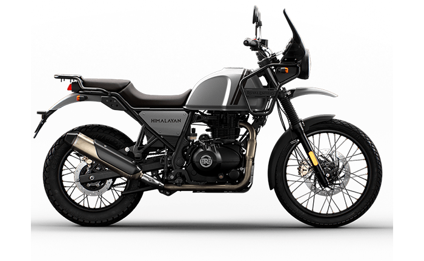

The Royal Enfield Himalayan was conceived by CEO Siddhartha Lal, as an adventure touring, or dual sport motorcycle.
The Himalayan differs considerably from the other motorcycles offered by Royal Enfield - most of which are various incarnations of the Bullet utilising the same frame and engine - in terms of its chassis and powertrain.
Pierre Terblanche, formerly of Ducati and Moto Guzzi among other companies, headed Royal Enfield's design team during development of the Himalayan.
Read more